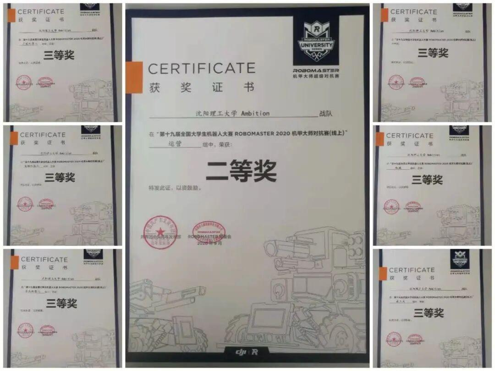

战队小百科

Ambition战队始建于2017年。
是电子技术与应用协会为助力RM机甲大师赛而组建的一只主攻机器人的团队。
从寥寥十数人到如今三十几人且拥有完整体系的团队，这背后是队员的不懈的执著努力，是对梦想始终如一的热爱与尊重。
机械组：
1．用电脑制图软件建立三维模型，设计加工装配机器人结构，外观。
2．完成电路的走线。
3．与电控，硬件，视觉进行沟通，明确自己的设计方向。
4．按照电控和视觉后期需求设计改进图纸，进行制造和组装。
电控组：
1.与机械组，硬件组，视觉组完成联调。
2.熟练使用各种电子器件，计算机软件。
3.完成整个机器人控制程序的编写以及调试。
视觉组：
1.编写视觉算法程序进行图像处理。
2.完成自瞄和能量机关的设计和雷达的开发。
3.辅助电控研发自动机器人。
硬件组：
1.设计一些基本模块（例如：驱动模块），按照机械、电控需求设计模块。
2.检查机器人的各种线路问题，设计机器人整体布线布局安排，并且接各种各样的线。
3.设计超级电容。
运营组：
1.宣传：熟练运用PR、PS、秀米等工具进行视频剪辑、图片海报制作、文字书写和排版推送；策划事项、组织实施各种活动等。
2.招商：同业内外企业沟通联系，洽谈各种商务赞助合作。

Ambition战队自成立以来参加过四届RM大赛，获得过一个国二，六个国三以及若干省奖；在全国大学生电子设计大赛中，获得过四个省一，数十个省二，省三。
Ambition战队2020赛季荣获全国大学生机器人大赛Robomaster对抗赛（线上）三等奖，其中运营组荣获国家级二等奖。

队长，战队为什么叫Ambition这个名字鸭？
Ambition,俺必胜嘛（皮一下很开心）。咳咳，其实Ambition是野心的意思，取这个名字是希望我们能在赛场上战无不胜，实现自己的野心。


那~咱们队员在日常训练中遇到过什么困难吗？
在做零件，组装小车经常遇到突发情况。有一次我就被600V电压的电电了（心疼自己），平常短路，烧板也是家常便饭。


你认为战队的灵魂人物是谁
我认为是杜宏智学长，杜宏智学长从大一就加入了战队，平时经常会指导我们，给了我们很多帮助。

最近技术部要招新，队长有什么要对报名的学弟学妹说的吗
电协是一个科技类社团，技术部的日常工作是枯燥且充满挑战的，希望学弟学妹们可以沉下心来磨练自己，学长期待着你们的加入。

排版|牛星月